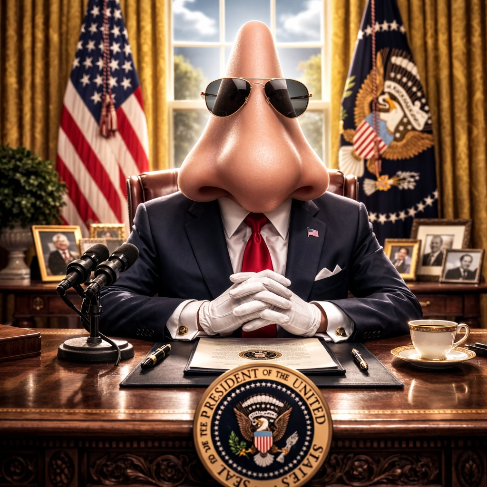

In a result that has left pundits blinking and perfumers weeping, the United States awoke this morning to discover it had elected a Nose as President.
Yes, a nose.
In what analysts are already calling “the most fragrant upset in modern political history,” voters across the nation scent a message to Washington: they were tired of politics that didn’t pass the smell test. The Nose—running on a platform of transparency, sensitivity, and “no more stinking gridlock”—swept key battleground states in a late surge pollsters failed to sniff out.
Victory headquarters erupted in cheers as the President-elect appeared on stage, flanked by red, white, and blue bunting and a tasteful arrangement of tissues. “My fellow Americans,” the Nose began, pausing dramatically, “I promise to lead with instinct.” The crowd roared, many waving scented candles in patriotic fragrances like Liberty Lavender and E Pluribus Peppermint.
Transition plans are already underway. In a bold move toward sensory bipartisanship, the President-elect has pledged to appoint an Ear as Secretary of Oversight to conduct hearings on government accountability. “It’s time Washington started listening,” the Nose declared. Meanwhile, a seasoned Mouth will be nominated to oversee the nation’s food supply, ensuring every policy is thoroughly chewed over before being swallowed whole.
The Cabinet will be rounded out by a steady Pair of Hands at Treasury (“to keep a firm grip on inflation”), a sharp Eye at Homeland Security (“to keep an eye on things”), and a Backbone as Chief of Staff (“because someone around here needs one”). Even Congress has signaled willingness to cooperate, though some lawmakers privately admitted they didn’t see this coming.
Markets initially reacted with confusion but quickly rebounded amid optimism that the new administration would clear the air in Washington. Lobbyists are said to be scrambling to rebrand as “aroma consultants,” while think tanks are publishing white papers on the economic impact of common scents.
Critics, of course, have raised concerns. Skeptics question whether a Nose can navigate the complexities of foreign policy. Supporters counter that it may be precisely what’s needed in a world that often reeks of trouble. “At least this President can detect danger from a mile away,” one voter remarked.
Inauguration plans are already underway, featuring a 21-sniff salute and a keynote performance by the Marine Band’s newly formed woodwind ensemble.
Love it or loathe it, one thing is certain: American politics will never smell the same again.